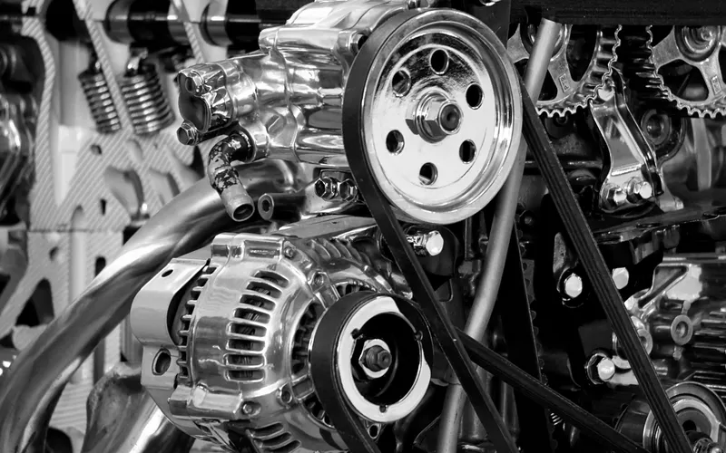
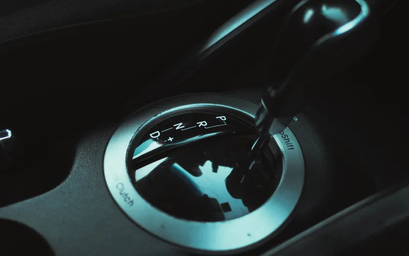
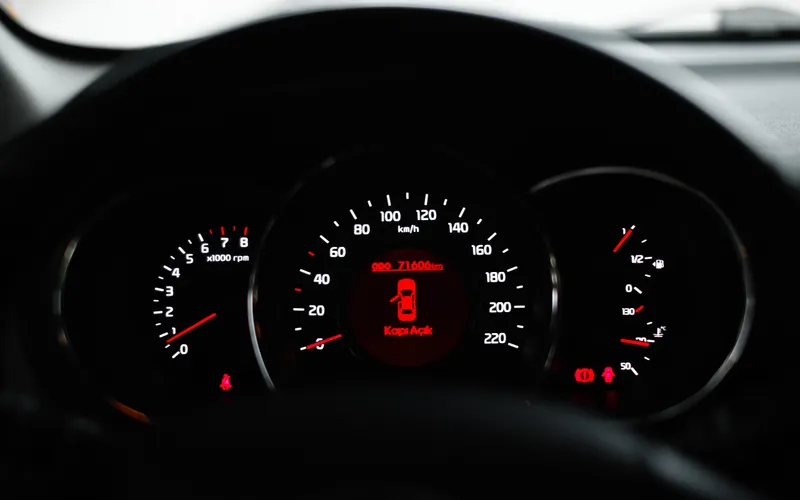
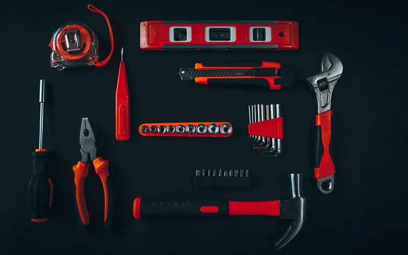

01
Engine Repair
& Rebuilding
Engine rebuilding, repair, and replacement to help get your vehicle running dependably again.

Discuss your engineBATON ROUGE'S ENGINE & TRANSMISSION SHOP
Reliable repair and diagnostic service for engines, transmissions, and drivability issues. Proudly serving customers in Baton Rouge and surrounding areas with honest work and practical solutions.
WHAT WE DO
From the first warning light to the next step in your repair, get straightforward help with your vehicle.
Engine rebuilding, repair, and replacement to help get your vehicle running dependably again.

Discuss your engineTransmission repair, service, and problem diagnosis for shifting and performance concerns.

Talk transmission serviceIdentify engine performance issues, warning signs, and drivability problems with accurate troubleshooting.

Tell us the symptomsStraightforward guidance on what your vehicle needs and which steps make the most sense.

Ask about your repairYOUR LOCAL SHOP
Checkered Flag is a Baton Rouge engine and transmission shop focused on helping drivers get back on the road with dependable service.
From diagnostics to repair work, the goal is simple: clear communication, quality workmanship, and a shop customers can trust.
COME SEE US
Reach out to Checkered Flag Auto Repair and Engine Rebuild for dependable service in Baton Rouge.